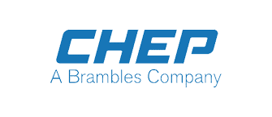

Blog //
The 7 avatars of a digital agency
With growing spends on digital, our industry is growing exponentially month on month. Keeping up with the pace is so difficult that digital agencies would not recognise themselves if they looked at the mirror!
When the going is good, strategy takes a backseat & execution is king. The more projects we execute, the more the moolah we rake in. Where's the need of a strategy here?
Although digital ad spends keep on increasing (unlike offline) & is expected to reach $285bn by 2021, digital agencies are not growing as they should. Instead, new agencies keep mushrooming to fill in the void. There is definitely something that these agencies are not doing right.
To define a strategy, the first question to ask is "Who are we?" For clients, it translates to "What kind of a digital agency do we hire?" There are 7 prominent types of digital agencies.
- Full Service Digital Agency This is the classic category and every (ok, most) digital agency aspires to be in this bracket. Being a full service digital agency is a win win situation for both the agency and the clients they service. The agency can achieve economies of scale and their output tends to be of better quality because of the expertise each function brings to the table. For the client, there's a single agency to deal with, but more importantly, the agency gains functional expertise & understands the business of the client. Combined with all the analytics & data crunching, these agencies sometimes have better insights about the business than the clients themselves.
- Full Service Digital Marketing Agency Even Google gets confused about this one. A search for "full service digital agency" throws up these agencies in the results too. These agencies concentrate on only one function of digital; digital marketing. Using the term "full service" along with a specialization is a bit of an oxymoron though. They offer Search Engine Optimization (SEO), Search Engine Marketing or PPC, Social Media Marketing (SMM) and Email Marketing. Agencies that have stayed updated with the times also offer Growth Hacking, Content Marketing & even App Store Optimization (ASO).
- Social Media Agency For a lot of people outside our industry, "Digital = Social Media" With 2 billion people liking & sharing on Facebook alone, there are agencies that work on just that one platform! Agencies that do social media marketing are more common though (we know about 200 such agencies). There's a lot to do in such a niche area too. Apart from posting engaging & interactive textual content, these agencies create and post banners, memes, infographics, videos and even produce live videos. They run campaigns & advertisements on these platforms.
- Digital Media Agency Got some moolah to spend? Call in a media buying agency! Their media planners will tell you all the cool places you can buy advertisements & charge a commission on the total spend. A technology called Programmatic is threatening to automate a lot of what media agencies do, but has not been able to much damage in the last 3 years since it arrived. The strategists & data scientists are still indispensable in a real time automated media buying scenario. In short, if you don't know how to use a DSP (Demand Side Platform) to undertake RTB (Real Time Bidding), better stick with your agency.
- Web Development Agency Usually the oldest of digital agencies, they have stuck to the old nomenclature. Web development agencies or dot commers were rebranded as Interactive firms around 2005. The current terminology of "digital agencies" became popular in 2010. These agencies have a technical bent of mind and handle the code behind websites, we applications & mobile apps. After the demise of desktop applications & the traditional client server architecture, Information Technology companies rebranded themselves as SMAC providers (Social, Mobile, Analytics & Cloud) and practice a trade called Digital Transformation, which looks similar to a scaled up version of what web development agencies have been doing.
- Search Agency These agencies offer either a combination of the two search engine related services; SEO (Search Engine Optimization) and SEM (Search Engine Marketing) or one of them. They always have their ear on the ground to hear what Google announces next, largely because Google has a lion's share of the search market at 63%. A favourite with interns at one time, repetitive tasks like link building in large quantities are no more in vogue, increasing costs & leaving interns with no option but to take up more skilful tasks. According to a eMarketer report, SEM spending in the US is expected to increase 24 percent over the next three years, from $36.69 billion in 2017 to $45.63 billion in 2019
- Content Agency
TThe only factor constant in the digital industry has been "Content is King". Right from a website to digital campaigns need quality content and copywriting. However, content agencies mushroomed only when the equation reversed itself. From being used as a tool in marketing, content transformed itself into a form of marketing. Content now means a lot more than textual content. It includes images like memes, animated GIFs & infographics, videos like explainers & 360° panoramic views and audio like music and podcasts.
As the digital industry matures, more and more specializations are becoming interdependent and agencies that focus on a specific area are finding it difficult to nurture talent inhouse. The pressure to metamorphose into a full service digital agency is growing. Meanwhile the very definition of a full service agency is changing. Internet is moving beyond desktops and mobiles to TVs, cars, watches, goggles, factories, offices, well almost everything. Wearables, Virtual Reality, Augmented Reality & IoT services are being offered by digital agencies today. To reflect the range of services that agencies like Intermind Digital Solutions provide, we have coined the term "True 360° Full Service Digital Agency", which includes emerging digital technologies apart from the regular services that a full service digital agency provides. This is the future that we envision for the digital industry.


- 